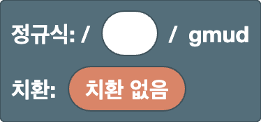

[ ] 안
치환치환 안
루트
정규식과 치환을 담는 기본 블록입니다. 작업 영역에 딱 하나만 있습니다.
루트 (정규식 / 치환)

정규식과 치환을 만드는 기본 블록입니다. 항상 작업 영역에 있으며 삭제할 수 없습니다.
- 정규식 칸: 여기에 패턴을 넣습니다. 처음에는 텍스트 입력란이라서 정규식을 직접 입력할 수도 있습니다. 오른쪽 클릭 → "블록으로 변환"을 선택하면 입력한 내용이 블록으로 바뀝니다.
- 치환 칸: "치환 없음"인 동안에는 결과에서 매칭된 부분이 강조 표시됩니다. 치환 블록을 연결하면 치환한 결과가 대신 표시됩니다.
플래그는 gmud로 고정되어 있습니다.
g(global): 첫 번째 매칭만이 아니라 모든 매칭을 찾습니다m(multiline):^와$가 텍스트 전체뿐 아니라 각 줄의 시작과 끝에 매칭됩니다u(unicode): 이모지 같은 문자를 한 글자로 다루며,\p{...}를 사용할 수 있게 합니다d(hasIndices): 각 그룹이 매칭된 위치도 기록합니다(결과 표시는 달라지지 않습니다)
예
- 정규식
5, 치환6→1525의 결과는1626(매칭된 부분이 모두 바뀝니다)
위치
문자가 아니라 위치에 매칭되는 블록입니다. 문자 0개에 매칭되며, 다른 블록과 조합해 어디에서 매칭할지를 지정합니다.
줄의 시작 (^)

줄이 시작되는 위치입니다. 문자에는 매칭되지 않고 위치에만 매칭됩니다.
이 에디터는 m 플래그를 사용하므로, 텍스트 전체의 시작뿐 아니라 모든 줄의 시작에 매칭됩니다.
예
^a→aaa(첫 번째 a만)
줄의 끝 ($)

줄이 끝나는 위치입니다. 문자에는 매칭되지 않고 위치에만 매칭됩니다.
이 에디터는 m 플래그를 사용하므로, 텍스트 전체의 끝뿐 아니라 모든 줄의 끝에 매칭됩니다.
예
a$→aaa(마지막 a만)
단어 경계 (\b / \B)

단어의 가장자리 위치입니다.
드롭다운에서 종류를 고릅니다.
\b: 단어 경계.\w문자(영문자, 숫자,_)와 그 밖의 문자(또는 텍스트의 끝) 사이입니다\B: 단어 경계가 아닌 위치
예
\bcat\b→cat concat(하나의 단어로서의 cat만)
주의
\w는 ASCII 영문자, 숫자, _만 포함하므로, é 같은 악센트 문자나 한글 등 라틴 문자가 아닌 문자는 단어 문자가 아닙니다.
이런 텍스트에서는 경계가 예상과 다른 곳에 생길 수 있습니다(예: \b가 café 안의 é 바로 앞에 생깁니다).
전방탐색 / 후방탐색 ((?=) / (?!) / (?<=) / (?<!))

현재 위치의 바로 뒤(또는 바로 앞)에 안쪽 패턴이 오는지 확인합니다. 위치만 나타내므로 안쪽 패턴은 매칭 결과에 포함되지 않습니다.
- 첫 번째 드롭다운: 비워 두면 전방탐색(뒤에 오는 것을 확인),
<는 후방탐색(앞에 오는 것을 확인) - 두 번째 드롭다운:
=는 "있음",!는 "없음"
예
\d+(?=px)→100px and 200em(뒤에 px가 오는 숫자만)(?<=\$)\d+→$30 and 30€($ 뒤의 숫자만)
문자
어떤 문자에 매칭할지 정하는 블록입니다. 문자 클래스 [ ] 안에서도 쓸 수 있는 블록에는 "문자 클래스" 태그가 붙어 있습니다.
텍스트 (자유 입력)

입력한 내용이 그대로 정규식(또는 치환)의 일부가 됩니다. 글자 수에 제한 없이 입력할 수 있습니다.
예
cat→cats and dogs
주의
. * + ? ( [ 같은 문자는 정규식에서 특별한 의미가 있습니다.
문자 자체에 매칭하려면 \.처럼 이스케이프하거나 이스케이프 문자 블록을 사용하세요.
임의의 문자 (.)

줄바꿈을 제외한 임의의 문자 1개에 매칭됩니다.
예
a.c→abc a-c ac
주의
문자 클래스 안에서는 사용할 수 없습니다([.]는 마침표 문자 자체를 뜻합니다).
숫자 / 단어 문자 (\d / \D / \w / \W)

드롭다운에서 종류를 고릅니다.
\d: 숫자 1개([0-9])\D: 숫자가 아닌 문자 1개\w: 영문자, 숫자,_중 1개([A-Za-z0-9_])\W: 영문자, 숫자,_가 아닌 문자 1개
예
\d+→Price: 120 USD
주의
\d와 \w는 ASCII만 포함합니다. 악센트 문자(é, ü), 한글 등 라틴 문자가 아닌 문자, 전각 숫자(１２３)는 포함되지 않습니다.
이런 문자에는 유니코드 속성을 사용하세요.
공백 (\s / \S)

드롭다운에서 종류를 고릅니다.
\s: 공백 문자 1개(스페이스, 전각 스페이스, 탭, 줄바꿈 등)\S: 공백이 아닌 문자 1개
예
\S+→foo bar(스페이스로 구분된 두 단어)
유니코드 속성 (\p{} / \P{})

문자의 종류(유니코드 속성)로 문자 1개에 매칭됩니다.
- 첫 번째 드롭다운:
p는 그 종류인 문자,P는 그 종류가 아닌 문자 - 두 번째 드롭다운: 비워 두면 일반 범주(문자, 숫자, 기호 등),
Script=는 문자 체계(그리스 문자, 키릴 문자 등) - 텍스트 입력란: 속성 이름
자주 쓰는 이름:
- 일반 범주:
L(문자),N(숫자),P(문장부호),S(기호) - 문자 체계:
Latin,Greek,Cyrillic,Han(한자)
예
\p{Script=Greek}+→alpha αβγ\p{L}+→café 123(\w와 달리 악센트 문자도 포함합니다)
주의
숫자, 스페이스, 대부분의 문장부호처럼 여러 문자 체계에서 함께 쓰는 문자는 특정 문자 체계가 아니라 Script=Common에 속합니다.
이런 문자도 포함하려면 [\p{Script=Greek}\d]처럼 문자 클래스에 함께 넣으세요.
외부 링크
-
유니코드 문자 클래스 이스케이프 (MDN):
\p{}를 쓰는 법과 사용할 수 있는 속성의 종류(일반 범주,Script=문자 체계,Emoji같은 속성)를 설명합니다
탭 (\t)

탭 문자 1개입니다. 치환에서는 탭을 넣습니다.
예
- 정규식
,, 치환\t→a,b의 결과는a⇥b(탭으로 구분)
줄바꿈 (\n)

줄바꿈 문자 1개입니다. 치환에서는 줄바꿈을 넣습니다.
예
- 정규식
,, 치환,\n→a,b의 결과는a,⏎b(쉼표 뒤에서 줄바꿈)
이스케이프 문자 (\/ \. \( 등)

정규식에서 특별한 의미가 있는 문자를 문자 그대로 다룹니다. 드롭다운에서 문자를 고릅니다.
-
패턴과 문자 클래스:
/ \ ^ $ ( ) . ? [ ] * { } | +를 사용할 수 있습니다.-는 문자 클래스 안에서만 사용할 수 있습니다(a-z같은 범위와 구별하기 위해서입니다). -
치환:
$를 제외한 모든 문자를 사용할 수 있습니다(\없이 문자 그대로 들어갑니다).$를 넣으려면$$블록을 사용하세요.
예
1\.5→1.5 105(마침표 문자 자체에 매칭)
문자 클래스 ([ ] / [^ ])
![[ ] 블록](../images/blocks/common/char_class.png)
안에 넣은 내용에 따라 문자 1개에 매칭됩니다. 톱니바퀴 아이콘으로 칸의 개수를 바꿀 수 있습니다.
드롭다운에서 종류를 고릅니다.
- 비어 있음(
[ ]): 안에 있는 문자 중 하나 ^([^ ]): 안에 있는 어떤 문자도 아닌 문자 1개
안에는 텍스트, \d \w, \s, \p{}, 탭, 줄바꿈, 이스케이프 문자, 범위(a-z) 블록을 넣을 수 있습니다.
오른쪽 클릭 → "외부 입력"을 선택하면 칸이 세로로 쌓여서, 내용이 길어져도 읽기 쉽습니다.
예
[aeiou]→hello[^0-9]+→12abc34
범위 (a-z)

문자 코드가 두 문자 사이에 있는 문자 1개에 매칭됩니다. 각 입력란에는 문자 1개(또는 \- 같은 이스케이프 1개)를 입력합니다.
예
[a-f]+→xcafey[α-ω]+→αβγABC(그리스 문자 소문자)
주의
범위는 문자 코드의 순서를 따릅니다. [A-z]에는 [ \ ] ^ _ ` 여섯 문자도 포함됩니다. 이 문자들이 Z와 a 사이에 있기 때문입니다.
영문자만 원한다면 A-Z와 a-z 두 범위를 넣어 [A-Za-z]로 만드세요.
연결 / 선택
여러 블록을 조합하는 블록입니다. 연결은 왼쪽부터 차례로 이어 붙이고, 선택은 그중 하나에 매칭됩니다. 톱니바퀴 아이콘으로 칸의 개수를 바꿀 수 있습니다.
연결

안에 넣은 내용을 왼쪽부터 차례로 이어 붙입니다. 톱니바퀴 아이콘으로 칸의 개수를 바꿀 수 있습니다.
오른쪽 클릭 → "외부 입력"을 선택하면 칸이 세로로 쌓여서, 내용이 길어져도 읽기 쉽습니다.
예
^,\d+,$를 연결 →^\d+$(숫자만 있는 줄)
선택 (|)

안에 넣은 내용 중 하나에 매칭됩니다. 왼쪽부터 차례로 시도하며, 처음으로 매칭된 것이 사용됩니다. 톱니바퀴 아이콘으로 칸의 개수를 바꿀 수 있습니다.
오른쪽 클릭 → "외부 입력"을 선택하면 칸이 세로로 쌓여서, 내용이 길어져도 읽기 쉽습니다.
예
cat|dog→a cat and a dog
주의
|는 앞뒤 전체를 나누므로, 다른 블록과 연결할 때는 (?:)로 감싸세요.
예를 들어 "a|b" 다음에 "c"를 연결하면 a|bc가 되어 "a" 또는 "bc"라는 뜻이 됩니다.
"a 또는 b, 그다음에 c"를 원한다면 (?:a|b)c를 사용하세요.
그룹화
패턴을 하나로 묶거나, 매칭된 부분을 기록(캡처)해 나중에 쓰기 위한 블록입니다. 캡처한 부분은 역참조와 치환에서 사용할 수 있습니다.
캡처하지 않는 그룹 ((?:))

안쪽 패턴을 하나로 묶습니다. 역참조나 치환에서 쓰는 번호는 붙지 않습니다.
블록은 자동으로 묶이지 않으므로, 반복이나 선택(|)의 범위를 정할 때 사용하세요.
예
(?:ab)+→abababc(ab를 한 덩어리로 반복)
캡처 그룹 (( ))

안쪽 패턴을 하나로 묶고, 매칭된 부분을 기록(캡처)합니다.
캡처한 부분은 역참조나 치환의 $1에서 사용할 수 있습니다.
그룹 번호는 왼쪽부터((가 나오는 순서대로) 1, 2, 3, ...으로 매겨집니다. 이름 붙은 그룹도 번호에 포함됩니다.
예
- 정규식
(\d+)-(\d+), 치환$2-$1→12-34의 결과는34-12
이름 붙은 그룹 ((?<name>))

이름이 붙은 캡처 그룹입니다. 캡처한 부분은 이름 있는 역참조나 치환의 $<name>에서 사용할 수 있습니다.
이름은 드롭다운의 "그룹 이름 만들기…"로 만듭니다. 이름은 영문자로 시작해야 하며, 영문자, 숫자, _만 사용할 수 있습니다.
예
- 정규식
(?<year>\d{4})-\d{2}, 치환$<year>→2025-08의 결과는2025
역참조 (\1)

해당 번호의 그룹이 캡처한 것과 같은 텍스트에 매칭됩니다. 드롭다운에서 그룹 번호를 고릅니다.
예
(\w)\1→book(같은 문자가 두 번 연속)
주의
이름 붙은 그룹도 번호에 포함됩니다. 또한 드롭다운의 번호는 작업 영역에 있는 그룹 블록의 개수로 정해집니다. 정규식 칸에 텍스트로 입력한 그룹은 세지 않습니다.
이름 있는 역참조 (\k<name>)

해당 이름의 그룹이 캡처한 것과 같은 텍스트에 매칭됩니다. 드롭다운에서 그룹 이름을 고릅니다.
예
(?<q>["'])\w+\k<q>→"abc" 'def"(같은 종류의 따옴표로 감싼 텍스트)
반복
반복 블록은 바로 앞의 요소 하나만 반복합니다.
안에 여러 글자를 넣으면 마지막 한 글자만 반복됩니다(abc+는 c만 반복합니다).
묶어서 반복하려면 (?:)를 사용하세요.
주의
반복 안에 또 반복을 넣으면(중첩하면) 매칭이 매우 느려질 수 있습니다.
예를 들어 (?:a+)+$를 aaaaaaaaaaaaaaaaaaaaaaaaaaaaab처럼 끝에서 실패하는 텍스트에 사용하면, 시도해야 할 조합의 수가 길이에 따라 기하급수적으로 늘어나 브라우저가 멈출 수 있습니다.
(?:a+)+는 a+와 같은 뜻이므로, 가능하면 중첩하지 마세요.
0번 또는 1번 (?)

안쪽 패턴이 있으면 1번, 없으면 0번 매칭됩니다(있어도 되고 없어도 됩니다).
드롭다운에서 종류를 고릅니다.
- 비어 있음(
?): 1번 매칭하는 쪽을 우선합니다 ?(??): 0번 매칭하는 쪽을 우선합니다
예
colou?r→color colour- 정규식
(\d)?(\d+), 치환[$1][$2]→123의 결과는[1][23] -
정규식
(\d)??(\d+), 치환[$1][$2]→123의 결과는[][123](??를 쓰면 첫 번째 그룹이 가능한 한 아무것도 가져가지 않으므로, 숫자가 모두 두 번째 그룹에 들어갑니다.??는 뒤에 오는 부분도 같은 문자를 가져갈 수 있을 때만 차이가 납니다)
0번 이상 / 1번 이상 (* / +)

안쪽 패턴을 반복합니다.
- 첫 번째 드롭다운:
*는 0번 이상,+는 1번 이상, 가능한 한 많이 반복합니다 - 두 번째 드롭다운:
?를 고르면 가능한 한 적게 반복합니다(*?+?)
예
a+→caaat-
정규식
<.+?>, 빈 치환 →<p><b>1</b> + <i>2</i> = 3</p>의 결과는1 + 2 = 3(태그만 제거) -
?가 없으면<.+>는 첫<부터 마지막>까지를 하나로 매칭하므로 전부 제거됩니다
"HTML" 샘플에서 ?를 붙였다 뗐다 하면서 차이를 확인해 보세요.
정확히 N번 ({N})

안쪽 패턴을 정확히 N번 반복합니다.
예
\d{3}→1234567
N번 이상 ({N,})

안쪽 패턴을 N번 이상 반복합니다.
드롭다운에서 종류를 고릅니다.
- 비어 있음(
{N,}): 가능한 한 많이 반복합니다 ?({N,}?): 가능한 한 적게 반복합니다
예
\d{2,}→1 22 333
N번에서 M번 ({N,M})

안쪽 패턴을 N번 이상 M번 이하로 반복합니다. M은 N보다 작을 수 없습니다.
드롭다운에서 종류를 고릅니다.
- 비어 있음(
{N,M}): 가능한 한 많이 반복합니다 ?({N,M}?): 가능한 한 적게 반복합니다
예
\d{2,3}→12345
치환
치환 블록은 루트의 치환 칸에 연결합니다. 치환에서는 텍스트, 탭, 줄바꿈, 이스케이프 문자 블록도 사용할 수 있습니다.
치환 연결

치환 안에서, 안에 넣은 내용을 왼쪽부터 차례로 이어 붙입니다. 톱니바퀴 아이콘으로 칸의 개수를 바꿀 수 있습니다.
오른쪽 클릭 → "외부 입력"을 선택하면 칸이 세로로 쌓여서, 내용이 길어져도 읽기 쉽습니다.
예
[,$&,]를 연결 → 치환은[$&]. 정규식\d+와 함께 쓰면a1의 결과는a[1]
$ 문자 ($$)

치환에 $ 문자를 넣습니다. 치환에서 $는 특별한 의미가 있으므로, $ 문자 자체는 $$로 씁니다.
예
- 정규식
\d+, 치환$$$&→100의 결과는$100
매칭된 문자열 ($&)

매칭된 텍스트 자체를 넣습니다.
예
- 정규식
\d+, 치환($&)→a1 b22의 결과는a(1) b(22)
매칭 전 문자열 ($`)

대상 텍스트에서 매칭된 부분보다 앞에 있는 내용을 모두 넣습니다.
예
- 정규식
=, 치환=$`→a=의 결과는a=a
매칭 후 문자열 ($')

대상 텍스트에서 매칭된 부분보다 뒤에 있는 내용을 모두 넣습니다.
예
- 정규식
=, 치환$'=→=b의 결과는b=b
그룹 참조 ($1)

해당 번호의 그룹이 캡처한 텍스트를 넣습니다. 드롭다운에서 그룹 번호를 고릅니다.
예
- 정규식
(\d+)-(\d+), 치환$2-$1→12-34의 결과는34-12
주의
이름 붙은 그룹도 번호에 포함됩니다. 또한 드롭다운의 번호는 작업 영역에 있는 그룹 블록의 개수로 정해집니다. 정규식 칸에 텍스트로 입력한 그룹은 세지 않습니다.
이름 있는 그룹 참조 ($<name>)

해당 이름의 그룹이 캡처한 텍스트를 넣습니다. 드롭다운에서 그룹 이름을 고릅니다.
예
- 정규식
(?<year>\d{4})-\d{2}, 치환$<year>→2025-08의 결과는2025